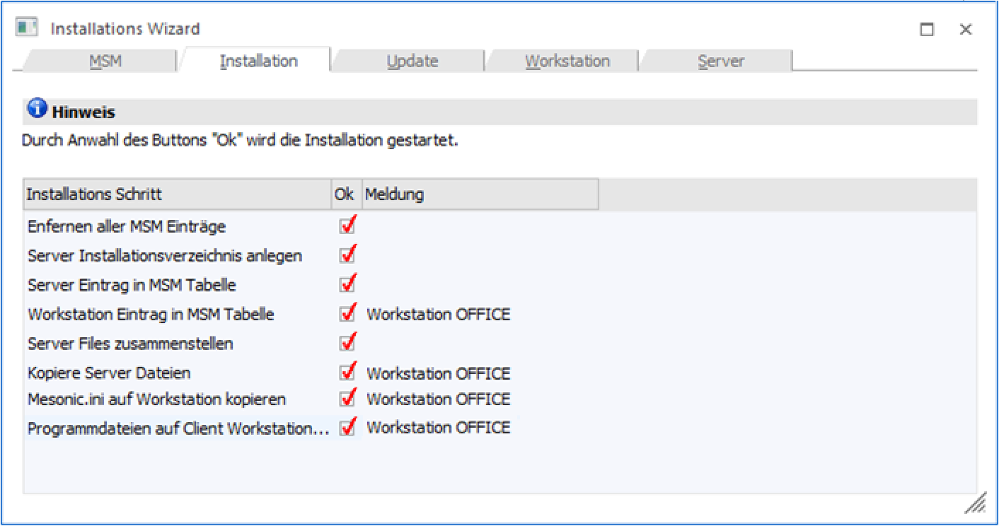

Der Workstation Wizard, der entweder über den Installations-Wizard oder über den Menüpunkt…
1 MSM
1 Workstation Wizard
… aufgerufen werden kann, wird für die Installation bzw. für die Deinstallation von Workstations benötigt. Dabei können folgende Eingaben gemacht werden:
Ø Typ
Aus der Auswahllistbox muss gewählt werden, um welche Installationsform es sich handelt. Dabei stehen 5 Möglichkeiten zur Verfügung:
ü 1 - Client/Server
Das Programm
wird auf die ausgewählte Workstation (Client) kopiert und installiert. Nur die
Daten werden zentral am Server verwaltet.
ü 2 - Zentrale Installation
Bei
der "Zentralen Installation" befinden sich Programme und Daten am Server. Pro
Client (Workstation) gibt es am Server ein eigenes Verzeichnis, in dem die
Konfigurationsdateien gespeichert sind. Auf dem Client müssen nur die
entsprechenden Treiber installiert sein (ODBC), damit das Programm gestartet
werden kann.
ü 3 - Terminal Server
Bei der
"Terminal Server"-Installation gibt es ebenfalls für jeden Client ein eigenes
"Home"-Verzeichnis, in dem die Konfigurationseinstellungen gespeichert sind. Der
Unterschied zur Zentralen Installation besteht darin, dass bei der
Terminal-Server-Installation am Client auch keine Treiber installiert werden
müssen.
ü 4 - Server Farm
Installation
Bei dieser Form der Installation gibt es mehrere Terminal-Server
die im Loadbalancing-Verfahren eingesetzt werden, wobei die Zuordnung der
Sessions automatisch erfolgt. In diesem Fall müssen die benutzerspezifischen
Einstellungen bzw. Dateien zentral am WinLine Server gespeichert werden.
ü 5 - EWL Client
Über diesen
Client Typ können bereits vorhandene Benutzer als EWL Benutzer angelegt werden.
Zusätzlich werden dabei eigene Homeverzeichnisse pro Benutzer angelegt.
Pro Installation können auch unterschiedliche Typen verwendet werden.
Ø Workstation Name
In diesem Feld muss der Name der Workstation eingegeben werden, auf die das Programm installiert werden soll. Durch Drücken der F9-Taste kann nach allen Workstations, die aktiv im Netzwerk sind, gesucht werden.
Ø Login Name
Dieses Feld kann nur bei den Optionen "3 - Terminal Server" und "5 EWL Client" eingetragen werden. Damit wird bestimmt, für welchen Benutzer die Installation vorgenommen wird.
Ø Home Verzeichnis
In diesem Feld muss das Verzeichnis eingetragen werden, in das das Programm installiert werden soll, bzw. im welchem Verzeichnis die Konfigurationsdateien gespeichert werden sollen (bei zentraler, Terminal-Server bzw. EWL Client Installation).
Für die Client/Server-Installation gibt es zwei Möglichkeiten:
ü Wurde auf der Workstation ein Verzeichnis (z.B. WinLine) angelegt und dieses freigegeben, damit dort das Programm installiert werden kann, muss im Feld Installationspfad nur mehr ein Backslash \ eingegeben werden.
ü Wurde auf der Workstation die gesamte Platte freigegeben, muss auch das Verzeichnis angegeben werden, in das das Programm installiert werden soll. Wird in diesem Fall auch nur ein Backslash \ eingegeben, wird das Programm ins Hauptverzeichnis installiert.
Achtung
Bei einer eventuellen Deinstallation des Programms werden auch alle Unterverzeichnisse gelöscht. Wurde das Programm in das Hauptverzeichnis installiert, werden sämtliche Unterverzeichnis ebenfalls gelöscht. Daher sollte es vermieden werden, dass Programm in ein Hauptverzeichnis (Root) zu installieren.
Ø Serverpfad auf Workstation
In diesem Feld muss der Serverpfad entweder in UNC (z.B. \\SERVER\WinLine) oder in gemappter Form (z.B. W:\) eingegeben werden. Dieser Eintrag wird auch in der Datei MESONIC.INI gespeichert, die auf jede Workstation bzw. in jedes Home-Verzeichnis kopiert wird. Wird hier ein falscher Pfad eingetragen, kann das Programm von keiner installierten Workstation aufgerufen werden.
Durch Anklicken des Buttons "Workstation-Wizard" können die Workstations auch programmgeführt angelegt werden. Nähere Informationen dazu entnehmen Sie bitte dem Kapitel Workstation Installation.
Im nächsten Fenster wird durch Drücken der F5-Taste die Installation sowohl auf dem Server als auch auf den Workstations gestartet.
 Wir eine
bereits installierte Workstation in der Tabelle aktiviert, kann diese durch
Anklicken des Löschen-Buttons aus der Installation entfernt werden. Das Programm
selbst muss dann manuell vom entsprechenden PC entfernt werden.
Wir eine
bereits installierte Workstation in der Tabelle aktiviert, kann diese durch
Anklicken des Löschen-Buttons aus der Installation entfernt werden. Das Programm
selbst muss dann manuell vom entsprechenden PC entfernt werden.
 Wenn eine WS
durch den Löschen-Button zum Löschen markiert wurde, dann kann sie durch
Anklicken des Buttons "Gelöscht-Status entfernen" wird aktiviert werden.
Wenn eine WS
durch den Löschen-Button zum Löschen markiert wurde, dann kann sie durch
Anklicken des Buttons "Gelöscht-Status entfernen" wird aktiviert werden.
 Durch
Anklicken des VOR-Buttons gelangt man in das nächste Fenster, von wo aus die
Installation gestartet werden kann.
Durch
Anklicken des VOR-Buttons gelangt man in das nächste Fenster, von wo aus die
Installation gestartet werden kann.
Im nächsten Fenster wird durch Drücken der F5-Taste die Dateien vom Server auf die neue Workstation kopiert.
Dabei werden folgende Arbeiten durchgeführt:
ü Die angeführten Workstations werden in die MSM-Tabelle eingetragen.
ü Das Verzeichnis für die Workstation wird angelegt (sofern es nicht schon vorhanden ist).
ü Die Datei MESONIC.INI wird auf die Workstation bzw. in das entsprechende Verzeichnis kopiert.
ü Alle benötigten Programmdateien (diese sind pro WS-Typ unterschiedlich) werden auf die WS kopiert.
Sie erhalten eine Übersicht über alle Schritte, die das Programm durchgeführt hat:

Als nächster Schritt muss auf jeder Workstation (ausgenommen bei Terminal-Server-Installationen) aus dem Verzeichnis \ClientSetup vom Server die Datei SETUP.EXE aufgerufen werden.
Dadurch werden die erforderlichen ODBC- Treiber, die für die Ausführung des Programms notwendig sind, sowie die Links zu den Programmdateien installiert.
Bei einer Terminal-Server-Installation muss dieser Schritt nicht durchgeführt werden.
Achtung
Bevor das Programm auf den neuen Workstations installiert wird, muss überprüft werden, ob der Internet-Explorer 6.0 oder höher installiert ist. Ist dies nicht der Fall, muss die Installation nachgeholt werden. Ansonsten kann das Hilfesystem nicht ordnungsgemäß arbeiten.